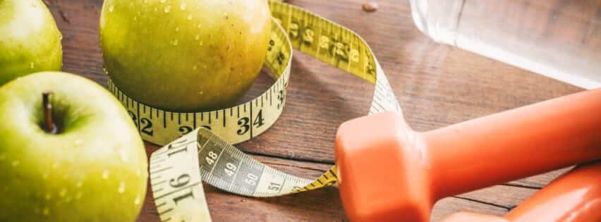
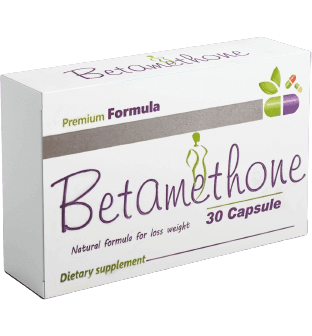
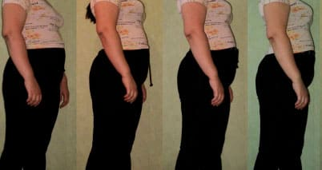

عقار تنحيف مبتكر - ينقص 15 كجم في 4 أسابيع بدون مواد كيميائية وجوع ومجهود بدني
يقول الدكتور هشام صبري من اشهر خبراء التغذية:
النظام الغذائي والتمارين الرياضية والحبوب وشفط الدهون هي الطرق الرئيسية لمكافحة السمنة اليوم ، ومع ذلك ، إذا حكمنا من خلال حقيقة أن عدد الأشخاص الذين يعانون من السمنة في تزايد مستمر ، فليس هناك أي منها فعال. تغير كل ذلك عندما تم تقديم مساعدات طبيعية لفقدان الوزن مثل .
ما هو ديوسليم؟
إذا كان جسمك يفتقر إلى فيتامين أ ، فأنت تأكل برتقالة ، إذا كان فسفور - سمك ، وفيتامين ج - كشمش أسود. يحتوي فقط على العناصر النزرة التي تثير حرق الدهون في جسم الإنسان. على وجه الخصوص ، مضادات الأكسدة الفائقة التي لا تحرق الدهون فحسب ، بل تعمل أيضًا على تطبيع عمل الجسم كله.
هو مركب طبيعي لفقدان الوزن. يحتوي على مستخلصات طبيعية بفضلها يزداد معدل حرق الدهون 10 مرات! ثبت سريريًا أن يسرع عملية التمثيل الغذائي ، ويعيد تنظيم الغدد الصماء ، ويحفز تجديد الأنسجة ويقمع الجوع. المنتج طبيعي تمامًا وهو محفز نشط للعمليات الطبيعية في جسم الإنسان. نظرًا لأن حرق الدهون يحدث من خلال التمثيل الغذائي السريع ، فلا يلزم اتباع نظام غذائي صارم. النظام الغذائي المتوازن كافٍ للحفاظ على التمثيل الغذائي. النشاط البدني المكثف في هذه الحالة ليس ضروريًا. كحل أخير ، يكفي الشحن البسيط.
مع اتباع نظام غذائي معتدل، فإن النشاط البدني المكثف ليس ضرورياً. يكفي تناول كبسولة واحدة من المنتج مع كوب من الماء قبل 03 دقيقة من كل وجبة
بسبب عملية التمثيل الغذائي السريع ، يمكن للأشخاص الذين يتناولون حرق الدهون تحت الجلد في المناطق التي تعاني من مشاكل بمعدل يصل إلى 500 جرام في اليوم! فعال حتى في الحالات التي تكون فيها الاضطرابات الهرمونية هي سبب زيادة الوزن. إذا كنت تميل إلى زيادة الوزن - فهذا المنتج مناسب لك! في مصر ، ظهر هذا المكمل مؤخرًا نسبيًا ، ولكنه أثبت نفسه بالفعل كأداة مفضلة للمدربين ورياضيين كمال الأجسام لفقدان الوزن بسرعة والحفاظ على نسبة منخفضة من الدهون في الجسم.
لقد أثبت فعاليته بالفعل. بفضل مساعدتها ، فقد أكثر من 7500 شخص الوزن بالفعل ويعيلون أنفسهم في حالة بدنية ممتازة. ينصح د. هشام أن تحذر من التزوير وأن تطلب فقط على الموقع الرسمي.
استطلاع: كيف تفقد الوزن؟
لحذر! ينصح الدكتور هشام مرضاه بعدم تناول الكثير من الدواء واستخدامه بحذر حسب التعليمات. في حالة سوء الاستخدام ، يمكن أن يتسبب المنتج في فقدان وزن كبير يزيد عن المعدل الموصى به ، مما يؤدي إلى فقدان الشهية.
عرض خاص! يمكنك شراء المنتج على الموقع الرسمي للموزع بخصم شخصي من دكتور هشام! *
* العرض الخاص ساري حتى
مروة أيها الاصدقاء ، أخبروني من أين اشتريتم هذا المنتج؟ لا يباع في الصيدليات. لا أريد أن اشتري منتج مقلد ، وإلا لن يكون هناك فائدة.
امينة إنه شعور غير حقيقي عندما تريد شيئًا ما حقًا ، لكنك تعتقد أنه شبه مستحيل. وبعد ذلك هذه المعجزة. لقد فقدت بالفعل 5 كيلوغرامات وأستمر بنفس الوتيرة. يتفاجأ الأصدقاء ، أعتقد أنني أتبع نظامًا غذائيًا صارمًا ، قلقون علي. وأنا لا أخبرهم بأي شيء ، دعهم يخمنوا)))))
اكرام أكرر مرة أخرى أنه لا يمكن طلب إلا على الموقع الرسمي للشركة المصنعة ، حتى لا تكون مخطئًا ، فقط انقر فوق الزر "الانتقال إلى موقع الشركة المصنعة على الويب" ! خاصة بالنسبة لقرائنا ومواطنينا ، هناك خصم ممتاز بالاتفاق مع الشركة المصنعة ، لكنه لن يكون صالحًا لفترة طويلة ، لذلك اسرع في طلبك! ويرجى الحذر من التزوير. مع أطيب التحيات ,اكرام.
اياد الصدري رائع إذا كان يعمل حقًا. على الرغم من أنني متشكك. ويمكنني أن أؤمن بقوة الحبوب أكثر من أي نوع من المساحيق. لكنه يستحق التجريب من أجل شكلي ، سأطلبه
عنبرة الام قبل البدء في هذا العلاج ، كان وزني 90 كجم. في شبابي كان نحيفًة دائمًا ، ومع تقدم العمر ظهر البطن والاجناب تدريجياً. في سن الخامسة والثلاثين ، أدركت أنني بحاجة ماسة إلى تنظيم نفسي. كرست نفسي للتدريب لمدة عام تقريبًا ، لكنني لم استطع الوصول إلى شكلي الطبيعي. ثم أضفت إلى النظام الغذائي وفي غضون أسابيع قليلة تحولت إلى الشخص الذي أتذكره منذ شبابي. الآن أحفظ الشكل الخاص بي ، ولدي دائمًا عبوة في المخزن